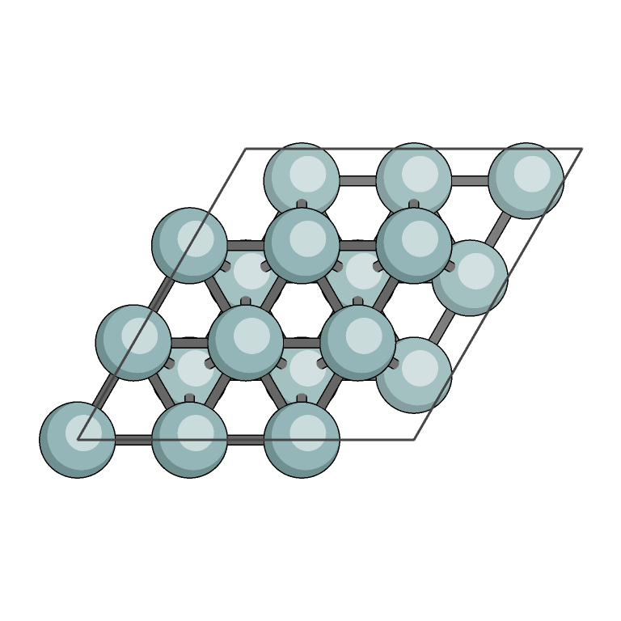
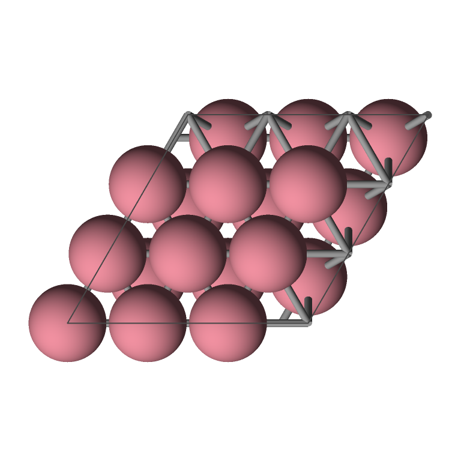
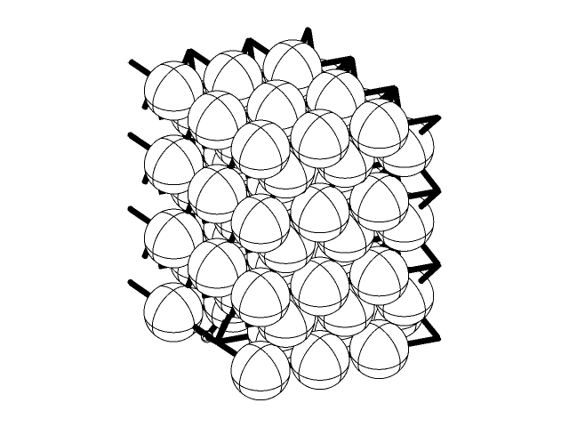
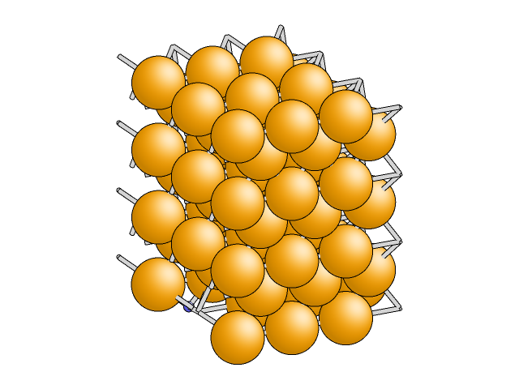
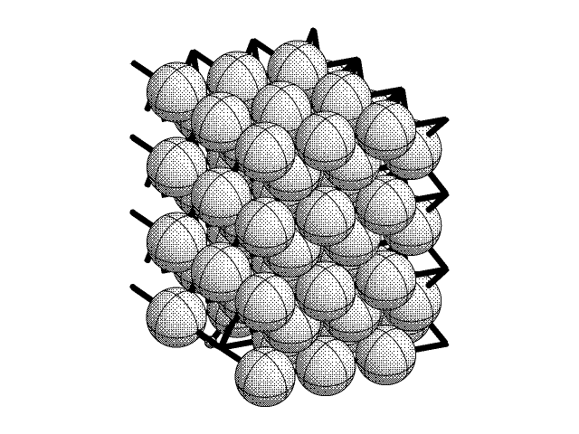
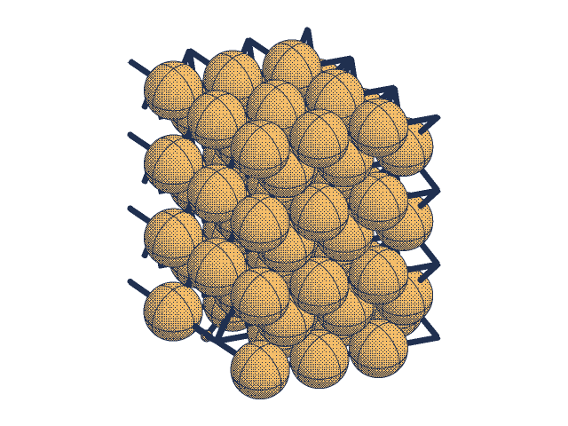
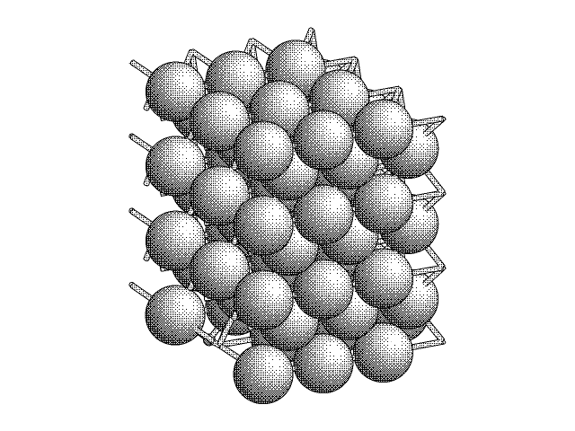
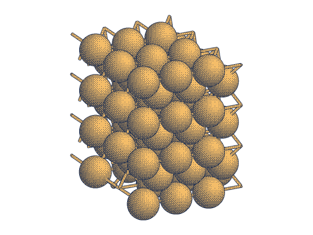
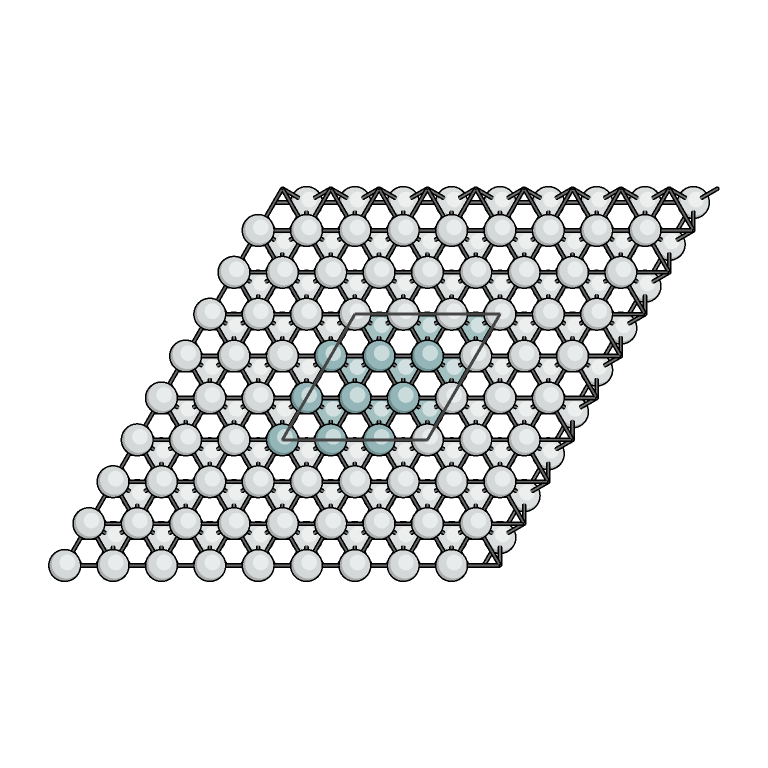

VASP GEOMETRY, MADE VISIBLE
From calculation
to a clear structure.
Turn VASP structures into reproducible, publication-oriented ball-and-stick images. A headless C program, a small configuration file, and a PNG you can use anywhere.
Linux / WSL · Orthographic PNG · No display server

This handbook documents QASR v0.4.0 and its qasr executable, including completed M7–M11. Download the QASR source and example kit. For built-in defaults independent of your preferences, add --no-user-config. The historical v0.3.0 tag used the provisional executable name vasp-render; its unchanged legacy source archive builds that older command.
01 / FIRST IMAGE
A reproducible first render
Run commands from your source checkout. No VASP installation or pseudopotential files are required to render an existing structure.
Get the source and examples
Download the current QASR source and example kit into the same directory. The kit contains the exact structures and preset used throughout this handbook.
tar -xzf qasr-source.tar.gz python3 -m zipfile -e qasr-examples.zip qasr-0.4.0/examples cd qasr-0.4.0Already using a checkout containing the current features? Extract the example kit into its
examples/directory and continue.Build an optimized executable
Install the system dependencies first, then build. The renderer is
build-release/qasr.cmake -S . -B build-release -DCMAKE_BUILD_TYPE=Release cmake --build build-release --parallel build-release/qasr --build-infoRender the cobalt example
build-release/qasr examples/CONTCAR.co \ --config examples/illustrated.json -o cobalt.pngThis produces a 768 × 768 illustrated top view. To start with your own structure, replace
Download the reference image ↗examples/CONTCAR.cowith its path. The file’s content determines the input format.

The smallest command
build-release/qasr POSCAR -o structure.pngUses the built-in shaded style, a fitted (1,1,1) view, 512 × 512 pixels, white background and 2× supersampling.
Check before rendering
build-release/qasr POSCAR --inspectPrints normalized geometry and settings as JSON. Inspection does not require an output filename.
02 / SETUP
Build & installation
Designed for headless Linux workstations and HPC nodes. The documented acceptance environment is Linux under WSL2.
Dependencies
The current default build uses a C11 compiler, CMake 3.16 or newer, libpng/zlib, libdeflate, the compiler’s OpenMP runtime, pkg-config and libxml2 2.9 or newer. cJSON is vendored. Python 3 is used for tests and tooling, not by the installed executable.
For a GCC-based Ubuntu/Debian environment, the package-install command is:
sudo apt install build-essential cmake pkg-config python3 \
libpng-dev zlib1g-dev libdeflate-dev libxml2-devBuild and install to a user-owned prefix:
cmake -S . -B build-release -DCMAKE_BUILD_TYPE=Release
cmake --build build-release --parallel
ctest --test-dir build-release --output-on-failure
cmake --install build-release --prefix "$HOME/.local"
"$HOME/.local/bin/qasr" --versionInstalled presets live under $HOME/.local/share/qasr/presets/. Pass a preset’s full path with --config; the CLI does not search for presets by name. Installed binaries use shared system libraries. Copying the executable alone to a different host may leave unresolved runtime dependencies.
| CMake option | Default | When to change it |
|---|---|---|
ENABLE_OPENMP | ON | OFF builds a serial renderer; use --threads 1 or auto. |
ENABLE_LIBDEFLATE | ON | OFF uses the libpng encoder as its default and removes the libdeflate dependency. |
ENABLE_XML | ON | OFF removes libxml2 and XML parsing. POSCAR and OUTCAR still work. |
ENABLE_CAIRO_EXPERIMENTS | OFF | Optional system Cairo prototypes for experiments; use the accurate Z-buffer for production geometry. |
BUILD_TESTING | ON | OFF omits tests and their Python requirement. |
ENABLE_SANITIZERS | OFF | ON enables address/undefined-behavior checks for a Debug development build. |
A minimal dependency build
cmake -S . -B build-minimal -DCMAKE_BUILD_TYPE=Release \
-DENABLE_OPENMP=OFF -DENABLE_LIBDEFLATE=OFF -DENABLE_XML=OFF \
-DBUILD_TESTING=OFF
cmake --build build-minimal --parallelThis still needs a C11 compiler, CMake and libpng/zlib. An XML input or an unavailable encoder/backend fails explicitly; no input geometry is silently discarded.
The XML network-denial test uses a localhost HTTP sentinel. Restricted test environments must allow local socket binding. LeakSanitizer also needs process inspection outside ptrace-restricted sandboxes.
03 / INPUT
Understand your input
One input file, one selected geometry. The renderer reads geometry only; it does not run a VASP calculation or assess convergence.
| Input | Geometry selection | Important rules |
|---|---|---|
| POSCAR / CONTCAR | final or 0 | One shared parser. Direct/Cartesian coordinates, scaling and selective-dynamics flags. |
| OUTCAR | final or zero-based N | Complete ionic POSITION snapshots with their applicable lattice. Recovery is opt-in. |
| vasprun.xmlv0.3.0 | final or zero-based N | Optional libxml2 support; complete documents only. Final-position semantics are described below. |
Builds reporting nonperiodic: true in --build-info accept cell-free molecules, explicit per-axis periodicity, XYZ/Extended XYZ, Gaussian Cartesian input (gaussian-input) and orientation output (gaussian-output), and AMS text System input (ams). No ASE dependency is required. The v0.4.0 source download below retains its original VASP-only readers.
XYZ defaults to nonperiodic geometry. Extended XYZ supports Properties, Lattice and explicit pbc="T T F". Gaussian input supports Å/Bohr units and optional TV vectors; Z-matrices, ONIOM and checkpoint files are unsupported. Gaussian output uses one orientation-table family. AMS supports one unnamed System, Atoms/Lattice in Å or Bohr, and FractionalCoords; AMS/ADF output and RKF files are unsupported. Full supported subsets are documented in the repository's docs/input-formats.md.
--inspect and reports expose cell_present and pbc. Only periodic axes wrap or generate image bonds. Replication requires periodic axes; --view top requires independent a/b cell vectors. Cell-free structures use the default oblique view or an explicit direction.
Auto detection uses content, not the extension. Override it with --format poscar|contcar|outcar|xml|xyz|extxyz|gaussian-input|gaussian-output|ams. All files must be uncompressed and are passed as local paths. Decompress an archive first:
gzip -dc OUTCAR.gz > OUTCAR
build-release/qasr OUTCAR -o final.png
# Paths containing spaces must be quoted.
build-release/qasr "calculation 01/CONTCAR" -o "figure 01.png"Normalized lattice vectors and Cartesian atom positions are in angstroms (Å). Atom indices are zero-based and follow the source order. The program never infers elements from a title or arbitrary comment. No POTCAR dataset is required.
POSCAR & CONTCAR
Read in this order: title, scaling factor(s), three lattice rows, element symbols, populations, optional Selective dynamics, coordinate mode and the declared coordinate rows. The parser supports one positive universal scale, a negative target-volume scale, or three positive component scales. Selective-dynamics flags are validated; they do not change how atoms are displayed. Velocities and predictor data after the geometry are ignored, while text limits remain enforced.
Synthetic skewed Si/O example
2
1 0 0
0.5 1 0
0.25 0.5 1
Si O
1 1
Selective dynamics
Direct
0.5 0.25 0.125 T F T
0 0 0 F F FWhat this means
After the scale of 2, the basis rows are [2,0,0], [1,2,0] and [0.5,1,2]. Direct coordinates are fractional: the first Si atom becomes [1.3125,0.625,0.25] Å.
For a VASP 4-style file with no element-symbol row, provide the species in population order:
build-release/qasr POSCAR \
--species Si,O -o structure.pngConflicting explicit species are an error. --frame 1 is also an error for a one-frame POSCAR.
OUTCAR: choose an ionic frame
The parser scans species/count metadata, lattice updates and complete POSITION / TOTAL-FORCE tables. It uses the lattice belonging to each snapshot, so changing-cell relaxations are not interpreted using one final basis. Electronic SCF iterations are not ionic frames. Numeric selection retains that frame while the rest of the file is still validated.
# First ionic snapshot (N is zero-based)
build-release/qasr examples/OUTCAR.relax --frame 0 -o first.png
# Last complete geometry of a recognized completed run
build-release/qasr examples/OUTCAR.relax --frame final -o final.png
# Explicitly accept a complete snapshot from an unfinished OUTCAR
build-release/qasr OUTCAR --recover --frame final -o recovered.pngWithout --recover, an unfinished run fails. Recovery emits a warning on stderr and reports recovered: true in input-inspection JSON. An incomplete trailing snapshot cannot replace a complete one. Malformed numeric data, inconsistent species and other validation failures are not repaired by recovery.
Real fixture coverage includes VASP 5.2.11/5.2.12 and 6.2.0 OUTCAR files. This is not a claim of all-version or real-MD OUTCAR compatibility. The downloadable two-frame OUTCAR.relax is synthetic; its version banner is not compatibility evidence.
vasprun.xml v0.3.0
XML input uses a streaming libxml2 reader. It validates the per-ion/type table and reads each structure’s basis and fractional positions. Energies, forces, DOS, eigenvalues and velocities are not exported by this geometry renderer.
build-release/qasr examples/vasprun.example.xml --inspect
build-release/qasr vasprun.xml --format xml --frame 0 -o first.png- Numeric frames count unnamed ionic structures directly under
calculationormodeling. Initial positions, primitive cells and nested SCF structures are excluded. finalprefersfinalpos, otherwise the last complete ionic structure.finalposdoes not add a duplicate frame. Its reported index is the last ionic index.- A final-only document has logical frame 0 and frame count 1. An initial-only document has no result frame and fails. Numeric selection in a trajectory is not overwritten by a later finalpos.
- The whole document must be complete, including its closing
modelingroot.--recoveris OUTCAR-only; truncated XML always fails. - DTD/entity loading is disabled, and DTD/entity-reference nodes are rejected. Namespaced XML and UTF-16/NUL-containing files are unsupported.
Minimal XML geometry structure
<structure name="finalpos">
<crystal><varray name="basis">
<v>2 0 0</v><v>1 2 0</v><v>0.5 1 2</v>
</varray></crystal>
<varray name="positions">
<v>0.5 0.25 0.125</v><v>0 0 0</v>
</varray>
</structure>This fragment needs a modeling root and complete atominfo metadata. The downloadable complete XML example includes both and has been parsed by the program.
Pinned real XML fixtures cover VASP 5.2.2 relaxation, 6.3.2 Si MD and 6.0.8 dielectric output. XML MD coverage does not establish MD support for the separate OUTCAR parser.
04 / APPEARANCE
Choose the visual language
The same geometry and depth intersections drive both styles. The difference is how visible surfaces are colored.

build-release/qasr examples/CONTCAR.co --view top --width 768 --height 768 -o co-shaded.pngShaded
The default style uses ambient/diffuse lighting on spheres and capped cylinders. Start with this for spatial depth and oblique views.
build-release/qasr CONTCAR \
--style shaded --view 1,1,1 -o shaded.pngIllustrated
Flat color bands, darker rims, pale highlights and black contours. --style illustrated changes the style only. The example preset additionally sets its palette, radii, 768px size, top view and depth fade.
build-release/qasr CONTCAR \
--config examples/illustrated.json -o illustrated.pngCamera and framing
Projection is orthographic: distances do not shrink with perspective. --view X,Y,Z is the direction from the scene center toward the camera; --up X,Y,Z controls vertical. The vectors must be finite, nonzero and noncollinear. Auto-fit includes atom radii, bond widths and visible cell edges.
# Slab normal: a × b, sign chosen toward c; a points right
build-release/qasr CONTCAR --view top -o top.png
# Custom oblique view, without cell/vacuum framing
build-release/qasr CONTCAR --view 1,-1,0.7 --cell off -o detail.png--view top follows the actual lattice surface normal, including tilted/skewed cells. An explicit --up overrides its usual a-vector alignment. For more or less surrounding space, set JSON camera.margin (default 0.06 on each side). Hiding the cell also removes cell/vacuum extents from fitting.
ORTEP spherical and BALSAC-inspired styles (v0.5.0 development)
--style ortep draws white spheres, black bonds and the visible halves of three perpendicular great circles. The curves rotate with the world Cartesian axes; they are depth cues, without displacement tensors or ellipsoids. Atom alpha is preserved, while element RGB colors are ignored.
--style balsac draws smooth element-colored spheres with broad white highlights, pale gray bonds and black silhouettes. This is a BALSAC-inspired appearance; palettes remain configurable. Both styles use the Z-buffer backend, work in JSON as image.style, and support annotations, transparency and periodic geometry. Cairo rejects them explicitly.


build/qasr CONTCAR --config presets/ortep.json -o ortep.png
build/qasr CONTCAR --config presets/balsac.json -o balsac.png--outline-width 0..8 controls ink in output pixels; zero removes contours and ORTEP arcs. Adaptive AA conservatively uses all 2× samples for these styles. Their presets select 768 × 768, a white background and no cell edges; the BALSAC preset also supplies an example orange Co / gray C / blue H palette.
Dithered monocolor and dualtone variants
With either ORTEP or BALSAC, add --tone monocolor for black/white stippling or --tone dualtone for navy/gold stippling. JSON uses image.tone; color is the default. All atoms share the chosen palette while keeping their alpha. ORTEP retains the curved cross over its stippled spherical shading.
An 8 × 8 ordered Bayer pattern is anchored to output pixels and shared across supersamples, preserving the dots and deterministic threaded output. Antialiasing and partial alpha blend palette colors at edges. Backgrounds, cell edges and annotations keep their configured appearance.




build/qasr CONTCAR --style ortep --tone monocolor --cell off -o mono.png
build/qasr CONTCAR --config presets/balsac-dualtone.json -o dual.pngEdges, depth and transparent backgrounds
--outline-width 0..8 sets illustrated contour width in output pixels. Cell lines use --cell-width (positive, up to 32); the default is 2px and the illustrated preset uses 3px. JSON image.depth_fade from 0 to 1 softens deeper illustrated layers toward white; the preset uses 0.9.
build-release/qasr POSCAR -o transparent.png \
--background '#ffffff00' --aa 2xColors accept #RRGGBB or #RRGGBBAA. Quote a color in the shell because # starts a shell comment. Background transparency and alpha-aware antialiasing are supported. Element alpha blends the nearest surface over the background; it does not reveal deeper atoms through a stack of transparent surfaces.
| Setting | Sampling | Use |
|---|---|---|
--aa 2x | 2 × 2 samples per pixel | Production default; balances smooth edges and cost. |
--aa native | 1 sample per pixel | Quick preview; visible edge aliasing is possible. |
--aa 4x | 4 × 4 samples per pixel | Higher-sampling quality reference; costs more memory/time. |
--aa adaptive | Interior/edge-aware sampling | Optional measured alternative; not universally faster than 2x. |
05 / PERIODIC CONTEXT v0.3.0
The primary cell, in context
Show the neighboring lattice while preserving the primary cell’s element colors. Expansion follows lattice a/b, not assumed Cartesian X/Y axes.

build-release/qasr examples/CONTCAR.co --config examples/illustrated.json --expand-xy 1,1 --image-colors muted -o context.pngCounts mean “on each side”
--expand-xy NX,NY generates (2×NX+1) × (2×NY+1) × 1 copies. Each count is 0..511. The original primary cell is at origin [0,0,0]. Its atoms retain their selected element RGB and alpha.
| Request | Result | Cell origins along a / b |
|---|---|---|
--expand-xy 0,0 | 1 × 1 × 1 | 0 / 0 |
--expand-xy 1,1 | 3 × 3 × 1 | −1…1 / −1…1 |
--expand-xy 2,1 | 5 × 3 × 1 | −2…2 / −1…1 |
--repeat 2,2,1 | 2 × 2 × 1, positive directions | 0…1 / 0…1 |
Neighbor atoms default to muted: less saturated and lighter, with a small element hue. greyscale uses a lightened neutral luminance. normal keeps full colors in all copies. These are RGB transforms, not artificial transparency; atom sizes, alpha and depth testing stay unchanged. Bonds keep their gray palette.
Nonzero --expand-xy cannot be combined with nontrivial --repeat. To override a preset that repeats the cell, also set --repeat 1,1,1. To return to ordinary repeat mode, set --expand-xy 0,0. CLI overrides each setting individually.
Centered expansion outlines the primary unit cell. Plain --repeat with normal colors retains the supercell outline. Applying muted/greyscale colors to legacy repeat also switches its outline to the primary cell. --cell off hides either outline. No additional z cells are generated by xy expansion; ordinary three-dimensional periodic bonding remains in effect.
Source coordinates are wrapped into a primary fractional cell before copies are made. A sphere is colored by its center’s cell identity and is drawn whole even if its radius crosses an outline. Boundary-crossing bonds are clipped at the expanded skewed region. The camera fits all copies. --inspect-scene exposes each atom’s origin, primary_cell and effective rgba.
06 / ANNOTATIONS
Make the image self-explanatory
Labels identify visible surfaces; the legend and footer sit outside the fitted geometry.
build-release/qasr examples/CONTCAR.co \
--config examples/illustrated.json \
--labels element --legend on \
--axes on --scale-bar on -o annotated.png--labels element|index|none- Element symbols or zero-based rendered atom-instance IDs. Visible front-surface anchors and collision filtering suppress hidden or overlapping labels. Some atoms can remain unlabeled.
--legend on- Counts every scene atom instance, including repeats and occluded layers. Periodic context uses full primary element colors for its swatches.
--axes on- Cartesian X/Y/Z: red, green, blue. These are not lattice a/b/c; directions are projected into the current camera.
--scale-bar on- A fitted physical bar in Å, chosen from 1/2/5 × powers of ten. It uses the final camera scale, not a fixed pixel-to-distance guess.
Annotations require the accurate Z-buffer backend, dimensions of at least 64px, and enough room for their panels. The camera is refitted after space is reserved; toggling annotations can change the scale of the geometry. Dense or very large labeled expansions can reach the visibility-work limit. Increase image size, reduce repetition or disable labels as appropriate.
QASR supports built-in → user → job → CLI defaults. The full configuration guide documents per-atom styles, validation, JSON jobs and preference-file migration.
07 / CONFIGURATION
Keep a repeatable visual recipe
Configuration precedence is built-in defaults → user preferences → explicit JSON → explicit CLI, regardless of where --config appears in the command.
Use one JSON file per invocation. Unknown keys, duplicate keys/options, invalid types, NaN/infinite values and conflicting element identities are errors. Config files are bounded to 1 MiB and JSON nesting depth 32. Frame, input format, thread count, recovery and paths can be supplied by the CLI or a --job invocation object; they are not settings keys for --config.
{
"image": {
"width": 1200, "height": 900,
"background": "#ffffff00", "style": "illustrated",
"aa": "2x", "depth_fade": 0.6, "outline_width": 1.5,
"png_encoder": "libpng", "png_compression": 1,
"png_filter": "adaptive"
},
"camera": {"projection": "orthographic", "view": "top", "margin": 0.06},
"geometry": {
"expand_xy": [1, 1], "image_colors": "greyscale",
"sphere_scale": 1, "bond_radius_A": 0.12
},
"elements": {"O": {"color": "#e88069", "radius_A": 0.5}},
"bond_cutoffs_A": {"Co-O": 2.5},
"overlays": {
"cell": true, "cell_width": 3, "labels": "none",
"axes": true, "legend": true, "scale_bar": true
}
}Download publication.json — a validated, portable libpng recipe. This is a complete recipe, not a second file to layer over the illustrated preset. Unspecified elements use the built-in Atom Architect defaults.
build-release/qasr examples/CONTCAR.co \
--config examples/publication.json --width 1600 -o figure.pngImage and camera keys
| JSON path | Accepted value / default |
|---|---|
image.width, image.height | Integers 1..16384; default 512 each. Total pixels ≤67,108,864. |
image.background | #RRGGBB[AA]; default opaque white. |
image.style | shaded (default) or illustrated. |
image.aa | native, 2x (default), 4x, adaptive. |
image.depth_fade | 0..1; default 0. Illustrated depth fading toward white. |
image.outline_width | 0..8 output pixels; default 1. Illustrated contours. |
image.backend | zbuffer (default), or experimental cairo. |
image.png_encoder | libdeflate in the default build; libpng fallback; optional experimental cairo. |
image.png_compression | "auto" or integer 0..9. Auto is filesystem-aware for libdeflate. |
image.png_filter | none, sub, up, adaptive. Default none for libdeflate, adaptive for libpng. |
camera.projection | Only orthographic. |
camera.view | Three numbers (default [1,1,1]) or string "top". |
camera.up | Three numbers; default [0,0,1]. Explicit values override top-view alignment. |
camera.margin | Number ≥0 and <0.5; default 0.06 per side. |
Geometry, element and overlay keys
| JSON path | Accepted value / meaning |
|---|---|
geometry.repeat | Three integers 1..1024; default [1,1,1]. Positive-direction copies. |
geometry.expand_xy | Two integers 0..511; default [0,0]. Centered neighbors on each side, no z copies. |
geometry.image_colors | normal, muted, greyscale. Default muted with nonzero centered expansion; normal otherwise. |
geometry.sphere_scale | Positive multiplier on display radii; default 1. |
geometry.bond_radius_A | Positive cylinder radius in Å; default 0.12. |
elements.SYMBOL.color | Exact IUPAC symbol and #RRGGBB[AA]. |
elements.SYMBOL.radius_A | Positive display radius in Å, before sphere_scale. |
bond_cutoffs_A.A-B | Positive pair cutoff in Å; symmetric. Do not supply both A-B and B-A. |
overlays.cell | Boolean; default true. |
overlays.cell_width | Positive output-pixel width ≤32; default 2. |
overlays.labels | none (default), element, index. |
overlays.axes, legend, scale_bar | Booleans; default false. |
species | Top-level array of 1..118 element symbols, e.g. ["Si","O"], matching input species/type order. |
Display radius and bond cutoff are independent. Making a sphere larger does not change connectivity. Colors, radii and pair policy originate from a pinned Atom Architect parameter snapshot; they are visualization defaults, not a universal chemistry or bond-order model.
08 / TRY A RECIPE
Build a command
Select options for the downloaded example kit. The command updates locally in your browser; rendering happens when you run it in your terminal.
build-release/qasr examples/CONTCAR.co --config examples/illustrated.json --view top --width 768 --height 768 --frame final -o structure.pngXML and centered periodic context are included in v0.3.0.
09 / OUTPUT
Images for people. JSON for inspection.
The renderer produces one selected image or one inspection document per invocation.
| Mode | Destination | Contains |
|---|---|---|
-o OUTPUT.png | A local file | Lossless PNG, with alpha where requested. Defaults: 512×512, shaded, 2× AA. |
--inspect | stdout | Normalized source geometry, frame metadata and effective requested settings. No scene is built. |
--inspect-scene | stdout | Wrapped/repeated spheres, clipped periodic bonds, cell edges and fitted camera. |
--build-info | stdout | Version and compiled XML/OpenMP/libdeflate/Cairo capabilities. |
Diagnostics / --benchmark-stages | stderr | Errors, recovery warning, selected render counters and config/parse/scene/render/PNG timings. |
PNG is the only image export. SVG, JPEG, animation and writing PNG to -o - are not implemented. PNG output uses a neighboring temporary file and only replaces its destination after successful encoding/close. Existing files survive failed parses/renders. Close/rename does not promise physical-disk durability or fsync.
Inspect and save JSON
build-release/qasr examples/POSCAR.skew --inspect > structure.json
build-release/qasr examples/CONTCAR.co --expand-xy 1,1 \
--inspect-scene > scene.jsonInspection and -o are mutually exclusive. Input inspection preserves unwrapped source coordinates; scene inspection shows the wrapping/translation used for rendering. Do not confuse a source atom’s index with the rendered instance index after repetition.
Input-inspection JSON: important fields
{
"format": "xml", "frame": 0, "frame_count": 1,
"recovered": false, "atom_count": 2,
"lattice_A": [[2,0,0], [1,2,0], [0.5,1,2]],
"atoms": [
{"index": 0, "element": "Si", "position_A": [1.3125,0.625,0.25]},
{"index": 1, "element": "O", "position_A": [0,0,0]}
]
}This excerpt omits the full settings object. Download the complete program-generated JSON.
Scene JSON conventions
camera.scale is pixels per Å. Camera right, up and view form the fitted orthographic basis. Annotation viewport_px uses a lower-left origin; its scale-bar metadata reports pixels and angstroms. PNG raster coordinates themselves start at the top left.
Primitives have kind (sphere, bond or cell), endpoints a/b in Å, radius, RGBA bytes, source IDs and integer lattice translations. Bond image is the displacement between base-cell atom images; origin is the start translation. Spheres also expose element, rendered instance index and primary-cell identity. source[1] is not meaningful for a sphere.
PNG size and encoding
The default libdeflate encoder uses no filter and auto compression: level 0 on native storage, level 1 on the measured WSL 9p Windows mount. Level 0 trades larger files for speed. Choose --png-compression 1 (or another level 0..9) for smaller output. Higher compression is still lossless.
build-release/qasr CONTCAR -o compact.png \
--png-compression 6
# Portable reference encoder
build-release/qasr CONTCAR -o reference.png \
--png-encoder libpng --png-compression 1 --png-filter adaptiveFor repeatable figures, retain your input, JSON preset, full command and build/compiler/library environment. Exact pixels are validated in a fixed environment; cross-platform floating-point/library reproducibility is not a universal guarantee.
10 / CLI REFERENCE
Every command-line control
qasr INPUT -o OUTPUT.png [options], or use an inspection mode. Options are case-sensitive. Duplicate options are errors.
| Option | Value / default | Purpose |
|---|---|---|
-o, --output | Path; required for PNG | Atomic PNG file output; stdout PNG is unsupported. |
--inspect | No value | Source geometry/settings JSON; omit -o. |
--inspect-scene | No value | Scene/camera JSON; omit -o. |
--format | auto (default), poscar, contcar, outcar, xml | Override content-based input detection. |
--frame | final (default) or N ≥0 | Select an ionic geometry, not an SCF iteration. |
--recover | No value | Accept complete snapshots in unfinished OUTCAR only. |
--species | Si,O,… | Explicit ordered species/type mapping. |
--config | One JSON path | Apply JSON before explicit CLI values. |
--width, --height | 1..16384; 512 each | Output-pixel dimensions, subject to total-pixel/memory limits. |
--repeat | NX,NY,NZ; 1,1,1 | Positive-direction cell repetition, each 1..1024. |
--expand-xy | NX,NY; 0,0 | Centered neighbors per side, each 0..511; available since v0.3.0. |
--image-colors | normal, muted, greyscale | RGB of nonprimary atoms; defaults depend on centered expansion. |
--view | X,Y,Z or top; 1,1,1 | Direction toward the camera or the slab normal. |
--up | X,Y,Z; 0,0,1 | Camera vertical; top view chooses a-based alignment unless explicit. |
--background | '#RRGGBB[AA]'; white | Canvas color/alpha. Quote shell color strings. |
--style | shaded (default), illustrated | Surface appearance; does not load a preset. |
--aa | native, 2x (default), 4x, adaptive | Antialiasing strategy. |
--outline-width | 0..8; 1px | Illustrated atom/bond contours. |
--cell-width | >0..32; 2px | Visible cell-edge width. |
--sphere-scale | Positive; 1 | Multiply element display radii. |
--bond-radius | Positive; 0.12 Å | Bond-cylinder radius. |
--cell | on (default), off | Toggle depth-tested cell outline. |
--labels | none (default), element, index | Visible-surface atom labels. |
--axes, --legend, --scale-bar | on / off; all off | Enable individual annotation panels. |
--threads | auto (default), 1..256 | OpenMP tile workers. Auto uses up to 8 workers at ≥512² pixels and 1 below; environment limits apply. |
--png-encoder | libdeflate / libpng / cairo | Select an available PNG encoder. |
--png-compression | auto or 0..9 | Encode size/speed tradeoff; pixels remain lossless for libpng/libdeflate. |
--png-filter | none / sub / up / adaptive | PNG scanline filter strategy. |
--backend | zbuffer (default), cairo | Accurate renderer or optional experimental painter. |
--benchmark-stages | No value | Stage times and render counters on stderr; excludes startup/JSON output. |
--help, --version, --build-info | Run alone | Usage, version string or JSON capability report. |
-- | Option terminator | Allow a positional input filename beginning with a dash; put rendering options before it. |
--batch | Run as first argument | M10 sequential JSONL worker; protocol and benchmarks. |
--cache-mib | 0..512; default 64; batch only | Bound retained input/scene allocations; zero disables caching. |
--max-jobs | 1..1000000; batch only | Stop the worker after this many nonblank request lines. |
| Configuration and automation (v0.4.0): full guide and availability | ||
--no-user-config | No value | Skip optional user preferences. |
--init-config | Run alone | Create starter user preferences without overwriting. |
--dump-config | No value | Resolved settings, runtime and provenance JSON. |
--schema | config (default), user, job, worker; standalone | Embedded Draft 2020-12 schema. |
--validate-config | No value; optional input path | Validate settings and input-bound selectors without rendering. |
--json-errors | No value | Structured error code, exit status, path and message on stderr. |
--job | JSON path or - | Invocation with runtime paths and embedded settings; exclusive with --config. |
--report | JSON path or - | Compact successful render report with hashes and stage timings. |
Experimental Cairo paths
Cairo must be enabled at build time. The painter fails interpenetrating-surface depth tests and is not selected for production. It does not support annotations or multiple threads. The Cairo PNG experiment has alpha/RGB quantization limitations and internal compression/filter settings; avoid it when exact transparent RGB matters. The default Z-buffer with libdeflate/libpng passed the correctness gates.
11 / DIAGNOSTICS
When a command fails
Errors go to stderr with a nonzero exit code. Inspect the input first, then reduce the request to isolate the problem.
Unknown option: --expand-xy, or XML is unavailable
You may have the original v0.2.0 executable or an XML-disabled build. Run --help and --build-info. Use v0.3.0 or newer for centered context; configure with -DENABLE_XML=ON for XML. The original v0.2.0 release does not include XML or centered context.
Unfinished OUTCAR / requested frame not found
Use --inspect to understand frame selection. Indices start at 0. A one-frame POSCAR supports only 0/final. For a genuinely unfinished OUTCAR, opt in with --recover only if a complete snapshot exists. It cannot repair malformed coordinates. XML must have a complete closing document.
Missing or conflicting species
For old POSCAR files, supply --species in population order. Use exact IUPAC symbols (Si, not SI). An explicit mapping may not override conflicting species already present in the file. XML potential types can share an element; its species mapping follows potential-type order.
The image is too small, includes vacuum, or points the wrong way
Try --view top for a slab. --cell off removes the cell/vacuum from auto-fit. Annotation panels reserve space before fitting; a larger output can help. A custom --up changes top-view orientation. The scale bar is in angstroms; it is not a screenshot zoom indicator.
Expansion conflicts with a preset
Inspect settings.geometry. For centered context, reset a nontrivial repeat with --repeat 1,1,1. For ordinary repeat, reset expansion with --expand-xy 0,0. Both settings participate in JSON-to-CLI precedence.
Some labels are missing or annotations do not fit
Hidden/colliding label plates are deliberately suppressed. Labels are not guaranteed for every atom. Enlarge the image or reduce repetition. Very dense labeled scenes can exceed the visibility-work budget; disabling labels retains the geometry. Cairo annotations are unsupported.
Allocation, periodic-candidate or visibility-work limit exceeded
Reduce image dimensions, AA sampling, repetition or unusually generous bond cutoffs. Skewed cells can require more periodic images. Limits are enforced before unsafe expansion/allocation; a parser-accepted structure can still be too expensive to render.
Output path cannot be written
Create the parent directory and check permissions. Quote paths with spaces. PNG stdout is unsupported. A failure preserves the existing destination; the temporary output is removed.
PNG is large / parallel rendering is unavailable
Use --png-compression 1 or higher instead of native-storage auto level 0. Check --build-info for OpenMP. Auto uses one thread for small images; explicit multiple threads require an OpenMP build. OMP environment limits affect the automatic policy.
| Code | Meaning |
|---|---|
| 0 | Success |
| 2 | CLI or JSON configuration error |
| 3 | Unsupported input format or unavailable build capability |
| 4 | Invalid/truncated input or missing frame |
| 5 | Element identity or geometry validation failure |
| 6 | Allocation, instance or work/expansion limit |
| 7 | Input/output failure |
| 8 | Internal error |
Resource limits and unsupported formats
Limits include 1,000,000 source atoms, 2,000,000 planned instances, 10,000,000 bonds, 67,108,864 output pixels and a 1 GiB aggregate scene/render allocation budget. Pair/candidate and expansion work are bounded at 200,000,000. Labels have an additional bounded visibility-work budget. Files are bounded at 64 GiB with 64 KiB physical lines; XML adds depth/node/text/attribute limits. These bounds are safeguards, not throughput guarantees.
XDATCAR, vasprun HDF5/vaspout.h5, compressed input, SVG/JPEG output, perspective projection and layered transparency are outside the implemented interface. Real fixture coverage is intentionally narrower than all VASP versions and calculation modes.
12 / EXAMPLES
See what the program produces
Every image below was rendered by the current executable from the downloadable inputs. Click an image to enlarge it; filenames link to the actual lossless PNGs.
Clean cobalt surface
User-provided Co(0001), 63 source atoms. Illustrated top-view preset.
co-illustrated.png ↓Pd / ceria
User-provided 249-atom snapshot, source-labeled CO-oxidation TS. Its assignment/convergence is not independently verified.
pd-ceria.png ↓
Skewed cell, transparent canvas
Synthetic POSCAR demonstrating scaled fractional coordinates. The checkerboard belongs to the website, not the PNG.
skew-transparent.png ↓
Periodic surroundings
Centered 3×3×1 expansion: 567 instances from 63 source atoms. Primary cell stays colored and outlined.
co-periodic-greyscale.png ↓
Relaxation: first frame
Synthetic OUTCAR, frame 0. The lattice is 2×2×2 Å.
relax-first.png ↓
Relaxation: final frame
The final basis and coordinates have changed. Each figure is independently auto-fitted; pixel sizes are not a shared physical scale.
relax-final.png ↓
Geometry from XML
The complete synthetic two-atom XML example, using finalpos and an oblique view. Its normalized coordinates match the skewed POSCAR.
xml-example.png ↓
A complete JSON recipe
1200×900 output from publication.json: transparent background, centered context and panels. Unspecified colors use built-in defaults.
publication.png ↓
Exact commands, input/PNG hashes and executable identity for all 12 generated examples are in the example manifest. Website image encoding uses compression level 6 for smaller downloads; this changes PNG size, not the rendered pixels.
13 / TAKE IT WITH YOU
Everything needed to reproduce a figure
This website is a static handbook. Download its examples, use your own inputs, or open the entire site locally without an application server.
Co and Pd/ceria cells, synthetic POSCAR/OUTCAR/XML, illustrated and publication JSON, provenance and license.
TAR.GZ / V0.4.0 SOURCEQASR source ↓v0.4.0 C source and tests, including configuration, batch rendering and OpenMP improvements. Builds qasr; not a prebuilt binary.
Illustrated presetPublication recipeComplete XML inputSource checksumsExample-image manifest
Licensing and provenance
Original code, documentation, website assets, presets, synthetic fixtures and the user-provided slab examples are GPL-3.0-only. The source archive includes third-party notices for vendored/reference materials and separately licensed fixtures. The example-kit slab snapshots retain their original provenance and collection manifest. No POTCAR datasets are included. Read the project license.
Images are renderer output, not AI-generated molecular illustrations. Display radii, colors and bond cutoffs are visualization policy. The program does not determine bond order, verify a transition state, or establish that a calculation converged.